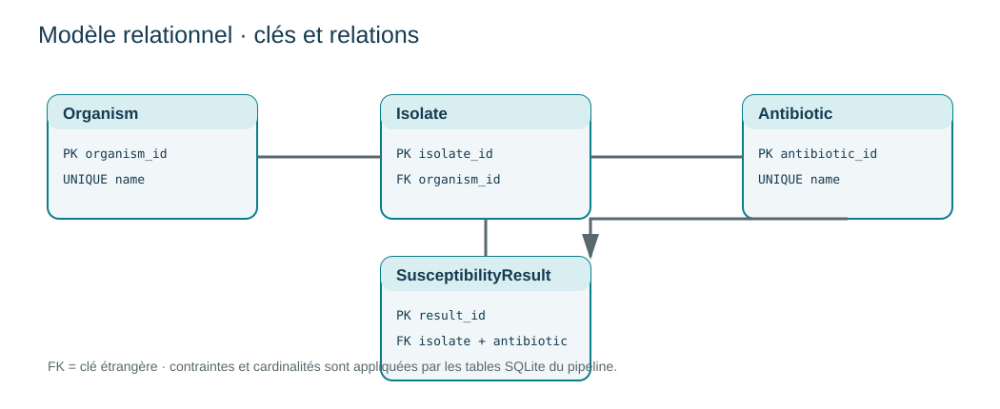

Modélisation SQL et pipeline ETL
Organiser des observations microbiologiques pour rendre les transformations, les contrôles et la provenance vérifiables.
Données synthétiques · architecture relationnelleContexte et justification
La modélisation relationnelle rend les données, contraintes, transformations et provenance auditables. Les 191 observations sont synthétiques et servent à tester le pipeline.
Données, tableaux, graphiques, JSON et scripts sont affichés dans cette fiche; les liens de téléchargement sont réservés aux logiciels.
1. Problématique
Les données de laboratoire arrivent souvent sous forme de fichiers hétérogènes. Des libellés différents, des catégories incohérentes ou des doublons peuvent produire des tableaux apparemment corrects mais scientifiquement fragiles. Une base relationnelle bien conçue sépare les entités, impose des contrôles et permet de reconstruire les indicateurs publiés.
2. Question et objectifs
Question : comment transformer des observations d’antibiogramme en résultats agrégés dont la source et les contrôles sont explicites ?
- définir une structure relationnelle pour les organismes, antibiotiques et résultats ;
- harmoniser les catégories de sensibilité ;
- identifier les valeurs manquantes, doublons et incohérences ;
- produire des agrégations SQL reproductibles ;
- conserver un manifeste de provenance pour relier les sorties à leur entrée.
3. Revue de lecture
Dans un système de données de santé, la qualité ne se limite pas à l’absence de cellules vides. Elle comprend l’exactitude, la complétude, la cohérence, l’unicité, la traçabilité et l’aptitude à l’usage. Les règles de validation doivent être définies avant l’agrégation : une catégorie inconnue n’est pas automatiquement une catégorie résistante et un doublon ne doit pas être supprimé sans conserver la décision.
La provenance complète cette démarche. Un fichier de sortie peut être mathématiquement correct tout en étant impossible à auditer si son origine, sa date, son format ou la transformation appliquée ne sont pas documentés. Le manifeste publié dans ce projet illustre cette exigence ; le pipeline et la requête sont fournis avec les données synthétiques.
4. Architecture SQL et traçabilité
SQL signifie Structured Query Language. Il s’agit d’un langage déclaratif : on décrit les données à sélectionner, relier, filtrer ou agréger, puis le moteur exécute la requête. Dans ce projet, cette séparation rend le calcul lisible pour un autre analyste et évite de dépendre d’une modification manuelle d’un tableau.
La table des observations contient une ligne par résultat, avec des champs contrôlés pour l’organisme, l’antibiotique et la catégorie S/I/R. Des tables de référence peuvent ensuite documenter les libellés, les unités et les règles de validation. Les clés et contraintes préviennent les enregistrements orphelins ; les requêtes de contrôle recherchent les valeurs nulles, doublons et catégories inconnues.
La traçabilité relie le fichier d’entrée à la table chargée, puis la table aux agrégations publiées. Pour chaque sortie, on doit pouvoir répondre à la date d’extraction, au fichier source, au nombre de lignes importées, aux transformations appliquées et aux anomalies conservées dans l’audit.
5. Méthode ETL
Extraire
Lire les fichiers source, identifier les colonnes et conserver les métadonnées utiles à la traçabilité.
Transformer
Nettoyer les libellés, normaliser les catégories S/I/R et contrôler les domaines de valeurs.
Charger
Insérer les enregistrements dans des tables relationnelles avec des clés et des relations explicites.
Contrôler
Comparer les comptages avant et après transformation, isoler les anomalies et produire un audit lisible.
 — contenu présenté dans la fiche
— contenu présenté dans la ficheRègles ETL et intégrité relationnelle
- Schéma d’entrée : identifiant d’isolat, organisme, antibiotique et résultat sont obligatoires; les libellés sont nettoyés par suppression des espaces périphériques.
- Domaine : résultat normalisé en S/I/R; les autres valeurs et les champs incomplets sont inscrits dans l’audit et exclus des agrégations.
- Identité : un identifiant d’isolat ne peut pas être associé à deux organismes. La paire isolat–antibiotique est unique; un doublon est conservé comme anomalie, pas fusionné.
- Chargement : tables relationnelles avec clés étrangères et contraintes d’unicité; SQLite est lancé en mémoire, donc aucune base locale persistante n’est créée.
- Agrégation : n = S+I+R; la proportion R = R/n × 100. La requête n’applique aucun référentiel clinique ni déduplication au niveau patient.
- Traçabilité : SHA-256 relie le manifeste à l’octet du fichier d’entrée; ce hash vérifie l’identité du fichier, pas son authenticité biologique.
6. Modèle relationnel et résultats
Le modèle distingue les objets qui ne doivent pas être confondus : une observation d’antibiogramme, un organisme, un antibiotique et une catégorie de résultat. Les clés identifient chaque enregistrement ; les relations relient l’observation à ses tables de référence ; les contraintes d’intégrité empêchent une catégorie inconnue ou une relation sans parent.
| Élément | Rôle | Contrôle |
|---|---|---|
| Observation | Résultat S/I/R associé à un couple | identifiant unique et champs obligatoires |
| Organisme | Référentiel des microorganismes | clé référencée par l’observation |
| Antibiotique | Référentiel des molécules testées | libellé harmonisé |
| Résultat | Catégorie interprétée | valeur limitée à S, I ou R |
Le pipeline compare les volumes à chaque étape : lignes reçues, lignes transformées, lignes acceptées et lignes rejetées. Une ligne rejetée n’est pas effacée : elle est comptée et décrite dans l’audit afin d’expliquer l’écart entre l’entrée et la sortie.
Le résumé SQL présente les agrégations par organisme et antibiotique. Le fichier d’audit liste les problèmes détectés, tandis que le manifeste décrit la provenance du résultat. Ensemble, ces sorties permettent de distinguer la mesure calculée, les réserves de qualité et l’origine du fichier.
Résultats SQL visibles
| Organisme | Antibiotique | n | R | I | S | R (%) |
|---|---|---|---|---|---|---|
| Escherichia coli | Ceftriaxone | 32 | 16 | 16 | 0 | 50.0 |
| Escherichia coli | Ciprofloxacin | 32 | 16 | 0 | 16 | 50.0 |
| Escherichia coli | Gentamicin | 32 | 0 | 0 | 32 | 0.0 |
| Klebsiella pneumoniae | Ceftriaxone | 32 | 16 | 0 | 16 | 50.0 |
| Klebsiella pneumoniae | Ciprofloxacin | 32 | 16 | 0 | 16 | 50.0 |
| Klebsiella pneumoniae | Gentamicin | 31 | 15 | 16 | 0 | 48.4 |
Les catégories répétées pour équilibrer les exercices sont un motif synthétique de programmation, et ne modélisent pas un échantillonnage microbiologique réel.

Provenance : le manifeste identifie le fichier de démonstration synthétique et son empreinte SHA-256. Aucune source clinique ou épidémiologique n’est utilisée.
Résumé SQL — contenu présenté dans la fiche · Audit des problèmes qualité — contenu présenté dans la fiche · Manifeste de provenance — contenu présenté dans la fiche
7. SQL analytique au-delà du chargement
Le dépôt comprend une seconde feuille avec trois patrons : CTE pour structurer un calcul, fonction fenêtre RANK() pour classer les proportions par organisme en conservant les égalités, et produit cartésien avec jointure externe pour repérer les couples sans test. Ces requêtes sont des exercices descriptifs sur données synthétiques.
Requêtes avancées CTE, classement et couverture — contenu présenté dans la fiche
8. Interprétation et limites
Une requête SQL garantit que la transformation est explicite et répétable ; elle ne garantit pas que les données source représentent correctement la réalité clinique. Une empreinte de fichier vérifie l’intégrité du fichier reçu, pas la validité biologique de son contenu. Dans une application réelle, il faudrait ajouter la gestion des identifiants patients, les règles de déduplication, les dates de prélèvement, le référentiel d’antibiogramme et des contrôles d’accès adaptés.
8. Conclusion
La modélisation et la provenance rendent une analyse biomédicale plus lisible pour un autre analyste, un biologiste ou un responsable qualité. Elles permettent de répondre à trois questions essentielles : quelles données ont été utilisées, quelles transformations ont été appliquées et quelles anomalies ont été rencontrées ?
Données, sorties et code visibles

Jeu complet d’observations synthétiques (191 lignes)
Afficher le tableau intégral · 191 lignes
| isolate_id | organism | antibiotic | result |
|---|---|---|---|
| DEMO_SQL_01_001 | Escherichia coli | Ceftriaxone | R |
| DEMO_SQL_01_002 | Escherichia coli | Ceftriaxone | I |
| DEMO_SQL_01_003 | Escherichia coli | Ceftriaxone | R |
| DEMO_SQL_01_004 | Escherichia coli | Ceftriaxone | I |
| DEMO_SQL_01_005 | Escherichia coli | Ceftriaxone | R |
| DEMO_SQL_01_006 | Escherichia coli | Ceftriaxone | I |
| DEMO_SQL_01_007 | Escherichia coli | Ceftriaxone | R |
| DEMO_SQL_01_008 | Escherichia coli | Ceftriaxone | I |
| DEMO_SQL_01_009 | Escherichia coli | Ceftriaxone | R |
| DEMO_SQL_01_010 | Escherichia coli | Ceftriaxone | I |
| DEMO_SQL_01_011 | Escherichia coli | Ceftriaxone | R |
| DEMO_SQL_01_012 | Escherichia coli | Ceftriaxone | I |
| DEMO_SQL_01_013 | Escherichia coli | Ceftriaxone | R |
| DEMO_SQL_01_014 | Escherichia coli | Ceftriaxone | I |
| DEMO_SQL_01_015 | Escherichia coli | Ceftriaxone | R |
| DEMO_SQL_01_016 | Escherichia coli | Ceftriaxone | I |
| DEMO_SQL_01_017 | Escherichia coli | Ceftriaxone | R |
| DEMO_SQL_01_018 | Escherichia coli | Ceftriaxone | I |
| DEMO_SQL_01_019 | Escherichia coli | Ceftriaxone | R |
| DEMO_SQL_01_020 | Escherichia coli | Ceftriaxone | I |
| DEMO_SQL_01_021 | Escherichia coli | Ceftriaxone | R |
| DEMO_SQL_01_022 | Escherichia coli | Ceftriaxone | I |
| DEMO_SQL_01_023 | Escherichia coli | Ceftriaxone | R |
| DEMO_SQL_01_024 | Escherichia coli | Ceftriaxone | I |
| DEMO_SQL_01_025 | Escherichia coli | Ceftriaxone | R |
| DEMO_SQL_01_026 | Escherichia coli | Ceftriaxone | I |
| DEMO_SQL_01_027 | Escherichia coli | Ceftriaxone | R |
| DEMO_SQL_01_028 | Escherichia coli | Ceftriaxone | I |
| DEMO_SQL_01_029 | Escherichia coli | Ceftriaxone | R |
| DEMO_SQL_01_030 | Escherichia coli | Ceftriaxone | I |
| DEMO_SQL_01_031 | Escherichia coli | Ceftriaxone | R |
| DEMO_SQL_01_032 | Escherichia coli | Ceftriaxone | I |
| DEMO_SQL_02_001 | Escherichia coli | Ciprofloxacin | R |
| DEMO_SQL_02_002 | Escherichia coli | Ciprofloxacin | S |
| DEMO_SQL_02_003 | Escherichia coli | Ciprofloxacin | R |
| DEMO_SQL_02_004 | Escherichia coli | Ciprofloxacin | S |
| DEMO_SQL_02_005 | Escherichia coli | Ciprofloxacin | R |
| DEMO_SQL_02_006 | Escherichia coli | Ciprofloxacin | S |
| DEMO_SQL_02_007 | Escherichia coli | Ciprofloxacin | R |
| DEMO_SQL_02_008 | Escherichia coli | Ciprofloxacin | S |
| DEMO_SQL_02_009 | Escherichia coli | Ciprofloxacin | R |
| DEMO_SQL_02_010 | Escherichia coli | Ciprofloxacin | S |
| DEMO_SQL_02_011 | Escherichia coli | Ciprofloxacin | R |
| DEMO_SQL_02_012 | Escherichia coli | Ciprofloxacin | S |
| DEMO_SQL_02_013 | Escherichia coli | Ciprofloxacin | R |
| DEMO_SQL_02_014 | Escherichia coli | Ciprofloxacin | S |
| DEMO_SQL_02_015 | Escherichia coli | Ciprofloxacin | R |
| DEMO_SQL_02_016 | Escherichia coli | Ciprofloxacin | S |
| DEMO_SQL_02_017 | Escherichia coli | Ciprofloxacin | R |
| DEMO_SQL_02_018 | Escherichia coli | Ciprofloxacin | S |
| DEMO_SQL_02_019 | Escherichia coli | Ciprofloxacin | R |
| DEMO_SQL_02_020 | Escherichia coli | Ciprofloxacin | S |
| DEMO_SQL_02_021 | Escherichia coli | Ciprofloxacin | R |
| DEMO_SQL_02_022 | Escherichia coli | Ciprofloxacin | S |
| DEMO_SQL_02_023 | Escherichia coli | Ciprofloxacin | R |
| DEMO_SQL_02_024 | Escherichia coli | Ciprofloxacin | S |
| DEMO_SQL_02_025 | Escherichia coli | Ciprofloxacin | R |
| DEMO_SQL_02_026 | Escherichia coli | Ciprofloxacin | S |
| DEMO_SQL_02_027 | Escherichia coli | Ciprofloxacin | R |
| DEMO_SQL_02_028 | Escherichia coli | Ciprofloxacin | S |
| DEMO_SQL_02_029 | Escherichia coli | Ciprofloxacin | R |
| DEMO_SQL_02_030 | Escherichia coli | Ciprofloxacin | S |
| DEMO_SQL_02_031 | Escherichia coli | Ciprofloxacin | R |
| DEMO_SQL_02_032 | Escherichia coli | Ciprofloxacin | S |
| DEMO_SQL_03_001 | Escherichia coli | Gentamicin | S |
| DEMO_SQL_03_002 | Escherichia coli | Gentamicin | S |
| DEMO_SQL_03_003 | Escherichia coli | Gentamicin | S |
| DEMO_SQL_03_004 | Escherichia coli | Gentamicin | S |
| DEMO_SQL_03_005 | Escherichia coli | Gentamicin | S |
| DEMO_SQL_03_006 | Escherichia coli | Gentamicin | S |
| DEMO_SQL_03_007 | Escherichia coli | Gentamicin | S |
| DEMO_SQL_03_008 | Escherichia coli | Gentamicin | S |
| DEMO_SQL_03_009 | Escherichia coli | Gentamicin | S |
| DEMO_SQL_03_010 | Escherichia coli | Gentamicin | S |
| DEMO_SQL_03_011 | Escherichia coli | Gentamicin | S |
| DEMO_SQL_03_012 | Escherichia coli | Gentamicin | S |
| DEMO_SQL_03_013 | Escherichia coli | Gentamicin | S |
| DEMO_SQL_03_014 | Escherichia coli | Gentamicin | S |
| DEMO_SQL_03_015 | Escherichia coli | Gentamicin | S |
| DEMO_SQL_03_016 | Escherichia coli | Gentamicin | S |
| DEMO_SQL_03_017 | Escherichia coli | Gentamicin | S |
| DEMO_SQL_03_018 | Escherichia coli | Gentamicin | S |
| DEMO_SQL_03_019 | Escherichia coli | Gentamicin | S |
| DEMO_SQL_03_020 | Escherichia coli | Gentamicin | S |
| DEMO_SQL_03_021 | Escherichia coli | Gentamicin | S |
| DEMO_SQL_03_022 | Escherichia coli | Gentamicin | S |
| DEMO_SQL_03_023 | Escherichia coli | Gentamicin | S |
| DEMO_SQL_03_024 | Escherichia coli | Gentamicin | S |
| DEMO_SQL_03_025 | Escherichia coli | Gentamicin | S |
| DEMO_SQL_03_026 | Escherichia coli | Gentamicin | S |
| DEMO_SQL_03_027 | Escherichia coli | Gentamicin | S |
| DEMO_SQL_03_028 | Escherichia coli | Gentamicin | S |
| DEMO_SQL_03_029 | Escherichia coli | Gentamicin | S |
| DEMO_SQL_03_030 | Escherichia coli | Gentamicin | S |
| DEMO_SQL_03_031 | Escherichia coli | Gentamicin | S |
| DEMO_SQL_03_032 | Escherichia coli | Gentamicin | S |
| DEMO_SQL_04_001 | Klebsiella pneumoniae | Ceftriaxone | R |
| DEMO_SQL_04_002 | Klebsiella pneumoniae | Ceftriaxone | S |
| DEMO_SQL_04_003 | Klebsiella pneumoniae | Ceftriaxone | R |
| DEMO_SQL_04_004 | Klebsiella pneumoniae | Ceftriaxone | S |
| DEMO_SQL_04_005 | Klebsiella pneumoniae | Ceftriaxone | R |
| DEMO_SQL_04_006 | Klebsiella pneumoniae | Ceftriaxone | S |
| DEMO_SQL_04_007 | Klebsiella pneumoniae | Ceftriaxone | R |
| DEMO_SQL_04_008 | Klebsiella pneumoniae | Ceftriaxone | S |
| DEMO_SQL_04_009 | Klebsiella pneumoniae | Ceftriaxone | R |
| DEMO_SQL_04_010 | Klebsiella pneumoniae | Ceftriaxone | S |
| DEMO_SQL_04_011 | Klebsiella pneumoniae | Ceftriaxone | R |
| DEMO_SQL_04_012 | Klebsiella pneumoniae | Ceftriaxone | S |
| DEMO_SQL_04_013 | Klebsiella pneumoniae | Ceftriaxone | R |
| DEMO_SQL_04_014 | Klebsiella pneumoniae | Ceftriaxone | S |
| DEMO_SQL_04_015 | Klebsiella pneumoniae | Ceftriaxone | R |
| DEMO_SQL_04_016 | Klebsiella pneumoniae | Ceftriaxone | S |
| DEMO_SQL_04_017 | Klebsiella pneumoniae | Ceftriaxone | R |
| DEMO_SQL_04_018 | Klebsiella pneumoniae | Ceftriaxone | S |
| DEMO_SQL_04_019 | Klebsiella pneumoniae | Ceftriaxone | R |
| DEMO_SQL_04_020 | Klebsiella pneumoniae | Ceftriaxone | S |
| DEMO_SQL_04_021 | Klebsiella pneumoniae | Ceftriaxone | R |
| DEMO_SQL_04_022 | Klebsiella pneumoniae | Ceftriaxone | S |
| DEMO_SQL_04_023 | Klebsiella pneumoniae | Ceftriaxone | R |
| DEMO_SQL_04_024 | Klebsiella pneumoniae | Ceftriaxone | S |
| DEMO_SQL_04_025 | Klebsiella pneumoniae | Ceftriaxone | R |
| DEMO_SQL_04_026 | Klebsiella pneumoniae | Ceftriaxone | S |
| DEMO_SQL_04_027 | Klebsiella pneumoniae | Ceftriaxone | R |
| DEMO_SQL_04_028 | Klebsiella pneumoniae | Ceftriaxone | S |
| DEMO_SQL_04_029 | Klebsiella pneumoniae | Ceftriaxone | R |
| DEMO_SQL_04_030 | Klebsiella pneumoniae | Ceftriaxone | S |
| DEMO_SQL_04_031 | Klebsiella pneumoniae | Ceftriaxone | R |
| DEMO_SQL_04_032 | Klebsiella pneumoniae | Ceftriaxone | S |
| DEMO_SQL_05_001 | Klebsiella pneumoniae | Ciprofloxacin | R |
| DEMO_SQL_05_002 | Klebsiella pneumoniae | Ciprofloxacin | S |
| DEMO_SQL_05_003 | Klebsiella pneumoniae | Ciprofloxacin | R |
| DEMO_SQL_05_004 | Klebsiella pneumoniae | Ciprofloxacin | S |
| DEMO_SQL_05_005 | Klebsiella pneumoniae | Ciprofloxacin | R |
| DEMO_SQL_05_006 | Klebsiella pneumoniae | Ciprofloxacin | S |
| DEMO_SQL_05_007 | Klebsiella pneumoniae | Ciprofloxacin | R |
| DEMO_SQL_05_008 | Klebsiella pneumoniae | Ciprofloxacin | S |
| DEMO_SQL_05_009 | Klebsiella pneumoniae | Ciprofloxacin | R |
| DEMO_SQL_05_010 | Klebsiella pneumoniae | Ciprofloxacin | S |
| DEMO_SQL_05_011 | Klebsiella pneumoniae | Ciprofloxacin | R |
| DEMO_SQL_05_012 | Klebsiella pneumoniae | Ciprofloxacin | S |
| DEMO_SQL_05_013 | Klebsiella pneumoniae | Ciprofloxacin | R |
| DEMO_SQL_05_014 | Klebsiella pneumoniae | Ciprofloxacin | S |
| DEMO_SQL_05_015 | Klebsiella pneumoniae | Ciprofloxacin | R |
| DEMO_SQL_05_016 | Klebsiella pneumoniae | Ciprofloxacin | S |
| DEMO_SQL_05_017 | Klebsiella pneumoniae | Ciprofloxacin | R |
| DEMO_SQL_05_018 | Klebsiella pneumoniae | Ciprofloxacin | S |
| DEMO_SQL_05_019 | Klebsiella pneumoniae | Ciprofloxacin | R |
| DEMO_SQL_05_020 | Klebsiella pneumoniae | Ciprofloxacin | S |
| DEMO_SQL_05_021 | Klebsiella pneumoniae | Ciprofloxacin | R |
| DEMO_SQL_05_022 | Klebsiella pneumoniae | Ciprofloxacin | S |
| DEMO_SQL_05_023 | Klebsiella pneumoniae | Ciprofloxacin | R |
| DEMO_SQL_05_024 | Klebsiella pneumoniae | Ciprofloxacin | S |
| DEMO_SQL_05_025 | Klebsiella pneumoniae | Ciprofloxacin | R |
| DEMO_SQL_05_026 | Klebsiella pneumoniae | Ciprofloxacin | S |
| DEMO_SQL_05_027 | Klebsiella pneumoniae | Ciprofloxacin | R |
| DEMO_SQL_05_028 | Klebsiella pneumoniae | Ciprofloxacin | S |
| DEMO_SQL_05_029 | Klebsiella pneumoniae | Ciprofloxacin | R |
| DEMO_SQL_05_030 | Klebsiella pneumoniae | Ciprofloxacin | S |
| DEMO_SQL_05_031 | Klebsiella pneumoniae | Ciprofloxacin | R |
| DEMO_SQL_05_032 | Klebsiella pneumoniae | Ciprofloxacin | S |
| DEMO_SQL_06_001 | Klebsiella pneumoniae | Gentamicin | I |
| DEMO_SQL_06_002 | Klebsiella pneumoniae | Gentamicin | R |
| DEMO_SQL_06_003 | Klebsiella pneumoniae | Gentamicin | I |
| DEMO_SQL_06_004 | Klebsiella pneumoniae | Gentamicin | R |
| DEMO_SQL_06_005 | Klebsiella pneumoniae | Gentamicin | I |
| DEMO_SQL_06_006 | Klebsiella pneumoniae | Gentamicin | R |
| DEMO_SQL_06_007 | Klebsiella pneumoniae | Gentamicin | I |
| DEMO_SQL_06_008 | Klebsiella pneumoniae | Gentamicin | R |
| DEMO_SQL_06_009 | Klebsiella pneumoniae | Gentamicin | I |
| DEMO_SQL_06_010 | Klebsiella pneumoniae | Gentamicin | R |
| DEMO_SQL_06_011 | Klebsiella pneumoniae | Gentamicin | I |
| DEMO_SQL_06_012 | Klebsiella pneumoniae | Gentamicin | R |
| DEMO_SQL_06_013 | Klebsiella pneumoniae | Gentamicin | I |
| DEMO_SQL_06_014 | Klebsiella pneumoniae | Gentamicin | R |
| DEMO_SQL_06_015 | Klebsiella pneumoniae | Gentamicin | I |
| DEMO_SQL_06_016 | Klebsiella pneumoniae | Gentamicin | R |
| DEMO_SQL_06_017 | Klebsiella pneumoniae | Gentamicin | I |
| DEMO_SQL_06_018 | Klebsiella pneumoniae | Gentamicin | R |
| DEMO_SQL_06_019 | Klebsiella pneumoniae | Gentamicin | I |
| DEMO_SQL_06_020 | Klebsiella pneumoniae | Gentamicin | R |
| DEMO_SQL_06_021 | Klebsiella pneumoniae | Gentamicin | I |
| DEMO_SQL_06_022 | Klebsiella pneumoniae | Gentamicin | R |
| DEMO_SQL_06_023 | Klebsiella pneumoniae | Gentamicin | I |
| DEMO_SQL_06_024 | Klebsiella pneumoniae | Gentamicin | R |
| DEMO_SQL_06_025 | Klebsiella pneumoniae | Gentamicin | I |
| DEMO_SQL_06_026 | Klebsiella pneumoniae | Gentamicin | R |
| DEMO_SQL_06_027 | Klebsiella pneumoniae | Gentamicin | I |
| DEMO_SQL_06_028 | Klebsiella pneumoniae | Gentamicin | R |
| DEMO_SQL_06_029 | Klebsiella pneumoniae | Gentamicin | I |
| DEMO_SQL_06_030 | Klebsiella pneumoniae | Gentamicin | R |
| DEMO_SQL_06_031 | Klebsiella pneumoniae | Gentamicin | I |
Résultats SQL
Afficher le tableau intégral · 6 lignes
| organism | antibiotic | n_tested | resistant_n | intermediate_n | susceptible_n | resistant_pct |
|---|---|---|---|---|---|---|
| Escherichia coli | Ceftriaxone | 32 | 16 | 16 | 0 | 50.0 |
| Escherichia coli | Ciprofloxacin | 32 | 16 | 0 | 16 | 50.0 |
| Escherichia coli | Gentamicin | 32 | 0 | 0 | 32 | 0.0 |
| Klebsiella pneumoniae | Ceftriaxone | 32 | 16 | 0 | 16 | 50.0 |
| Klebsiella pneumoniae | Ciprofloxacin | 32 | 16 | 0 | 16 | 50.0 |
| Klebsiella pneumoniae | Gentamicin | 31 | 15 | 16 | 0 | 48.4 |
Audit des anomalies
Afficher le tableau intégral · 0 lignes
| row_number | issue | value | isolate_id | antibiotic |
|---|
Classement SQL
Afficher le tableau intégral · 6 lignes
| organism | antibiotic | n | resistant_fraction | resistance_rank |
|---|---|---|---|---|
| Escherichia coli | Ceftriaxone | 32 | 0.5 | 1 |
| Escherichia coli | Ciprofloxacin | 32 | 0.5 | 1 |
| Escherichia coli | Gentamicin | 32 | 0.0 | 3 |
| Klebsiella pneumoniae | Ceftriaxone | 32 | 0.5 | 1 |
| Klebsiella pneumoniae | Ciprofloxacin | 32 | 0.5 | 1 |
| Klebsiella pneumoniae | Gentamicin | 31 | 0.4838709677419355 | 3 |
Couverture des couples
Afficher le tableau intégral · 6 lignes
| organism | antibiotic | observed_n |
|---|---|---|
| Escherichia coli | Ceftriaxone | 32 |
| Escherichia coli | Ciprofloxacin | 32 |
| Escherichia coli | Gentamicin | 32 |
| Klebsiella pneumoniae | Ceftriaxone | 32 |
| Klebsiella pneumoniae | Ciprofloxacin | 32 |
| Klebsiella pneumoniae | Gentamicin | 31 |
Manifeste JSON de provenance
{
"pipeline": "AMR CSV ETL",
"status": "SUCCESS",
"input_filename": "data/DEMO_SYNTHETIC_amr_sql.csv",
"input_sha256": "d72a3f8308997f1d6915fccf0aeae9af7cc505602ffa3785e7e996a078b531ab",
"rows_received": 191,
"rows_curated": 191,
"unique_isolates": 191,
"organisms": [
"Escherichia coli",
"Klebsiella pneumoniae"
],
"source_url": "NOT_APPLICABLE_SYNTHETIC_FIXTURE",
"source_query": "Synthetic fixture bundled with this project",
"retrieval_date": null,
"run_utc": "2026-10-18T01:45:17.913675+00:00",
"database_status": "SQLite in-memory; Python standard library",
"data_provenance_note": "All input observations are synthetic and do not originate from patients, hospitals, or a biological surveillance source."
}Pipeline ETL Python complet
Code complet · 125 lignes
#!/usr/bin/env python3
"""Load synthetic AMR CSV into SQLite, audit it, and export SQL summaries."""
from __future__ import annotations
import argparse
import csv
import hashlib
import html
import json
import sqlite3
from collections import Counter
from datetime import datetime, timezone
from pathlib import Path
ROOT = Path(__file__).resolve().parents[1]
VALID = {"S", "I", "R"}
def write_csv(path: Path, headers: list[str], rows: list[dict[str, object]]) -> None:
path.parent.mkdir(parents=True, exist_ok=True)
with path.open("w", newline="", encoding="utf-8") as handle:
writer = csv.DictWriter(handle, fieldnames=headers); writer.writeheader(); writer.writerows(rows)
def write_svg(path: Path, rows: list[dict[str, object]]) -> None:
width, height, x0, plot = 1100, 180 + 76 * len(rows), 440, 560
out = [f'<svg xmlns="http://www.w3.org/2000/svg" viewBox="0 0 {width} {height}" role="img" aria-labelledby="t d">',
'<title id="t">Synthetic antimicrobial resistance summary from SQLite</title>',
'<desc id="d">SQL aggregates for synthetic organism-antibiotic groups; 31–32 synthetic tests per group.</desc>',
'<rect width="100%" height="100%" fill="#fff"/>',
'<text x="45" y="48" font-family="Arial" font-size="25" font-weight="700" fill="#153b52">SQL summary · synthetic observations</text>',
'<text x="45" y="78" font-family="Arial" font-size="15" fill="#59686e">Resistant results (R) / all classified tests · n=31–32 per pair</text>']
for tick in (0,25,50,75,100):
x=x0+plot*tick/100
out.extend([f'<line x1="{x:.1f}" y1="110" x2="{x:.1f}" y2="{height-42}" stroke="#d7e1e4"/>',f'<text x="{x:.1f}" y="105" text-anchor="middle" font-family="Arial" font-size="12" fill="#59686e">{tick}%</text>'])
for i,row in enumerate(rows):
y=147+i*76; pct=float(row['resistant_pct']); label=html.escape(f"{row['organism']} - {row['antibiotic']}")
out.extend([f'<text x="425" y="{y+5}" text-anchor="end" font-family="Arial" font-size="15" fill="#153b52">{label}</text>',f'<rect x="{x0}" y="{y-17}" width="{plot}" height="25" rx="3" fill="#eef6f7"/>',f'<rect x="{x0}" y="{y-17}" width="{plot*pct/100:.1f}" height="25" rx="3" fill="#087e8b"/>',f'<text x="{x0+plot*pct/100+8:.1f}" y="{y+1}" font-family="Arial" font-size="13" font-weight="700" fill="#153b52">{pct:g}% (n={row["n_tested"]})</text>'])
out.append('</svg>')
path.parent.mkdir(parents=True,exist_ok=True); path.write_text("\n".join(out),encoding="utf-8")
def main() -> None:
parser = argparse.ArgumentParser(description=__doc__)
parser.add_argument("--input", type=Path, default=ROOT / "data" / "DEMO_SYNTHETIC_amr_sql.csv")
parser.add_argument("--output-dir", type=Path, default=ROOT / "results")
parser.add_argument("--sql", type=Path, default=ROOT / "sql" / "summary.sql")
args = parser.parse_args()
raw_bytes = args.input.read_bytes()
with args.input.open(newline="", encoding="utf-8-sig") as handle:
reader = csv.DictReader(handle)
required = {"isolate_id", "organism", "antibiotic", "result"}
if not reader.fieldnames or not required.issubset(reader.fieldnames):
raise SystemExit(f"Input must contain columns: {', '.join(sorted(required))}")
records = list(reader)
conn = sqlite3.connect(":memory:")
conn.executescript("""
PRAGMA foreign_keys = ON;
CREATE TABLE organisms (organism_id INTEGER PRIMARY KEY, name TEXT NOT NULL UNIQUE);
CREATE TABLE antibiotics (antibiotic_id INTEGER PRIMARY KEY, name TEXT NOT NULL UNIQUE);
CREATE TABLE isolates (isolate_id TEXT PRIMARY KEY, organism_id INTEGER NOT NULL REFERENCES organisms);
CREATE TABLE susceptibility_results (
result_id INTEGER PRIMARY KEY,
isolate_id TEXT NOT NULL REFERENCES isolates,
antibiotic_id INTEGER NOT NULL REFERENCES antibiotics,
result TEXT NOT NULL CHECK (result IN ('S','I','R')),
UNIQUE (isolate_id, antibiotic_id)
);
""")
issues: list[dict[str, object]] = []
organism_by_isolate: dict[str, str] = {}
inserted = 0
for line, row in enumerate(records, start=2):
isolate, organism = (row.get("isolate_id") or "").strip(), (row.get("organism") or "").strip()
antibiotic, result = (row.get("antibiotic") or "").strip(), (row.get("result") or "").strip().upper()
if not all((isolate, organism, antibiotic, result)):
issues.append({"row_number": line, "issue": "missing_required_value", "value": "", "isolate_id": isolate, "antibiotic": antibiotic}); continue
if result not in VALID:
issues.append({"row_number": line, "issue": "invalid_result", "value": result, "isolate_id": isolate, "antibiotic": antibiotic}); continue
if isolate in organism_by_isolate and organism_by_isolate[isolate] != organism:
issues.append({"row_number": line, "issue": "isolate_organism_conflict", "value": organism, "isolate_id": isolate, "antibiotic": antibiotic}); continue
try:
organism_by_isolate[isolate] = organism
conn.execute("INSERT OR IGNORE INTO organisms(name) VALUES (?)", (organism,))
conn.execute("INSERT OR IGNORE INTO antibiotics(name) VALUES (?)", (antibiotic,))
organism_id = conn.execute("SELECT organism_id FROM organisms WHERE name=?", (organism,)).fetchone()[0]
conn.execute("INSERT OR IGNORE INTO isolates(isolate_id, organism_id) VALUES (?,?)", (isolate, organism_id))
antibiotic_id = conn.execute("SELECT antibiotic_id FROM antibiotics WHERE name=?", (antibiotic,)).fetchone()[0]
conn.execute("INSERT INTO susceptibility_results(isolate_id, antibiotic_id, result) VALUES (?,?,?)", (isolate, antibiotic_id, result))
inserted += 1
except sqlite3.IntegrityError:
issues.append({"row_number": line, "issue": "duplicate_isolate_antibiotic", "value": result, "isolate_id": isolate, "antibiotic": antibiotic})
summary_sql = args.sql.read_text(encoding="utf-8")
summary_rows = [dict(zip([col[0] for col in conn.execute(summary_sql).description], row)) for row in conn.execute(summary_sql).fetchall()]
args.output_dir.mkdir(parents=True, exist_ok=True)
write_csv(args.output_dir / "sql_amr_summary.csv", ["organism", "antibiotic", "n_tested", "resistant_n", "intermediate_n", "susceptible_n", "resistant_pct"], summary_rows)
write_csv(args.output_dir / "data_quality_issues.csv", ["row_number", "issue", "value", "isolate_id", "antibiotic"], issues)
advanced_text = (ROOT / "sql" / "advanced_queries.sql").read_text(encoding="utf-8")
statements, buffer = [], ""
for line in advanced_text.splitlines():
buffer += line + "\n"
if sqlite3.complete_statement(buffer):
if buffer.strip(): statements.append(buffer)
buffer = ""
if buffer.strip(): raise SystemExit("Advanced SQL has an incomplete final statement")
if len(statements) != 3: raise SystemExit(f"Expected three advanced SQL statements, got {len(statements)}")
for query, filename in ((statements[1], "sql_resistance_rank.csv"), (statements[2], "sql_coverage_audit.csv")):
cursor = conn.execute(query)
output_rows = [dict(zip([col[0] for col in cursor.description], row)) for row in cursor.fetchall()]
write_csv(args.output_dir / filename, list(output_rows[0]) if output_rows else [col[0] for col in cursor.description], output_rows)
write_svg(args.output_dir / "sql_amr_summary.svg", summary_rows)
manifest = {"pipeline": "AMR CSV ETL", "status": "SUCCESS", "input_filename": args.input.relative_to(ROOT).as_posix(),
"input_sha256": hashlib.sha256(raw_bytes).hexdigest(), "rows_received": len(records), "rows_curated": inserted,
"unique_isolates": len(organism_by_isolate), "organisms": sorted(set(organism_by_isolate.values())),
"source_url": "NOT_APPLICABLE_SYNTHETIC_FIXTURE", "source_query": "Synthetic fixture bundled with this project",
"retrieval_date": None, "run_utc": datetime.now(timezone.utc).isoformat(),
"database_status": "SQLite in-memory; Python standard library",
"data_provenance_note": "All input observations are synthetic and do not originate from patients, hospitals, or a biological surveillance source."}
(args.output_dir / "provenance_manifest.json").write_text(json.dumps(manifest, indent=2) + "\n", encoding="utf-8")
print(f"Loaded {inserted}/{len(records)} synthetic rows; exported {len(summary_rows)} SQL groups and {len(issues)} issue(s).")
conn.close()
if __name__ == "__main__":
main()
Requête SQL de synthèse
Code complet · 14 lignes
SELECT
organisms.name AS organism,
antibiotics.name AS antibiotic,
COUNT(*) AS n_tested,
SUM(CASE WHEN result = 'R' THEN 1 ELSE 0 END) AS resistant_n,
SUM(CASE WHEN result = 'I' THEN 1 ELSE 0 END) AS intermediate_n,
SUM(CASE WHEN result = 'S' THEN 1 ELSE 0 END) AS susceptible_n,
ROUND(100.0 * SUM(CASE WHEN result = 'R' THEN 1 ELSE 0 END) / COUNT(*), 1) AS resistant_pct
FROM susceptibility_results
JOIN isolates USING (isolate_id)
JOIN organisms USING (organism_id)
JOIN antibiotics USING (antibiotic_id)
GROUP BY organisms.name, antibiotics.name
ORDER BY organisms.name, antibiotics.name;
Requêtes SQL avancées
Code complet · 24 lignes
-- Educational queries over synthetic data; SQLite 3.25+ for window functions.
-- CTE: calculate group counts once, then present rates.
WITH counts AS (SELECT o.name organism,a.name antibiotic,COUNT(*) n,
SUM(x.result='R') r,SUM(x.result='I') i,SUM(x.result='S') s
FROM susceptibility_results x JOIN isolates USING(isolate_id)
JOIN organisms o USING(organism_id) JOIN antibiotics a USING(antibiotic_id)
GROUP BY o.name,a.name)
SELECT *,ROUND(100.0*r/NULLIF(n,0),1) resistant_pct FROM counts;
-- Window ranking retains tied proportions.
WITH rates AS (SELECT o.name organism,a.name antibiotic,COUNT(*) n,
1.0*SUM(x.result='R')/COUNT(*) resistant_fraction
FROM susceptibility_results x JOIN isolates USING(isolate_id)
JOIN organisms o USING(organism_id) JOIN antibiotics a USING(antibiotic_id)
GROUP BY o.name,a.name)
SELECT *,RANK() OVER(PARTITION BY organism ORDER BY resistant_fraction DESC) resistance_rank
FROM rates ORDER BY organism,resistance_rank,antibiotic;
-- Coverage audit shows missing organism-antibiotic combinations.
SELECT o.name organism,a.name antibiotic,COUNT(x.result_id) observed_n
FROM organisms o CROSS JOIN antibiotics a
LEFT JOIN isolates i ON i.organism_id=o.organism_id
LEFT JOIN susceptibility_results x ON x.isolate_id=i.isolate_id AND x.antibiotic_id=a.antibiotic_id
GROUP BY o.name,a.name ORDER BY o.name,a.name;
Références récentes et documentation (2017–2026)
- W3C Data Catalog Vocabulary (DCAT), version 3. W3C Recommendation. 2024 Source
- WHO Data Quality Review toolkit, 2020 Source
- HL7 FHIR Release 5 specification, 2023 Source
- OHDSI Common Data Model v5.4 documentation Source
- SQLite SQL language reference Source
- SQLite foreign-key constraints Source
- SQLite window functions Source
- W3C JSON-LD 1.1, W3C Recommendation. 2020 Source
- FAIRplus FAIR Cookbook Source
- CDC Public Health Data Strategy 2024–2025 Source
Les données et sorties sont synthétiques et servent à illustrer une architecture d’analyse.